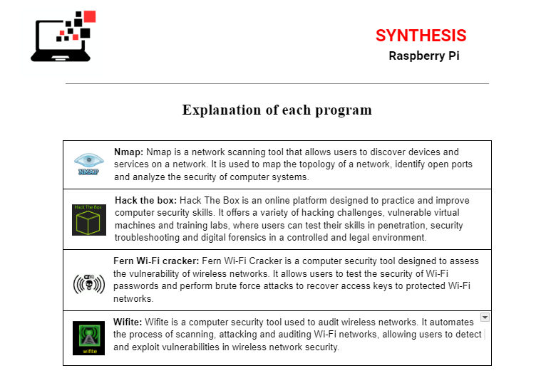
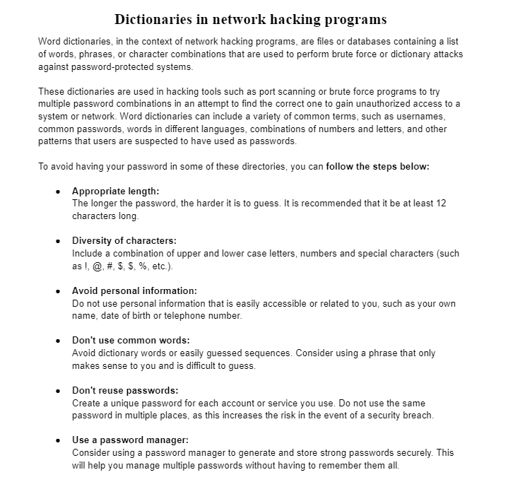

Aquí podem veure, els programes que vem poder fer servir durant el treball per poder experimentar i alhora poder estudiar com per cara les empreses pot ser un perill de seguretat no tenir una contrasenyes segura de la xarxe o tenir la xarxe segura a atacs de porgrames tan basics com aquests.

Document del porjecte
I en aquesta podem veure l'estudi que vem fer sobre els diccionaris de contrasenyes i donem una serie d'informació de com haurien de ser mes segures.